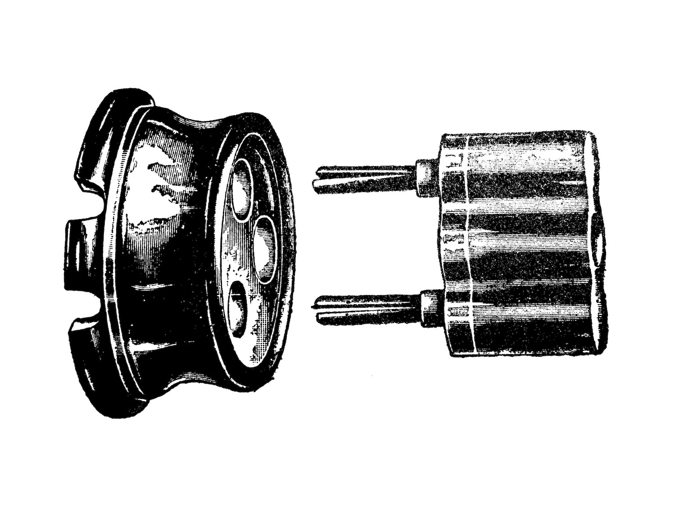
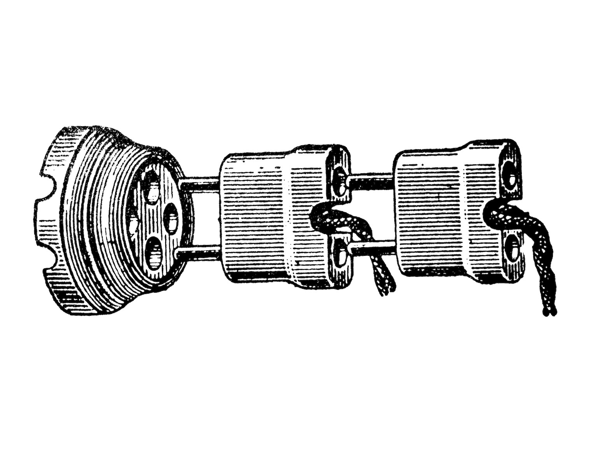
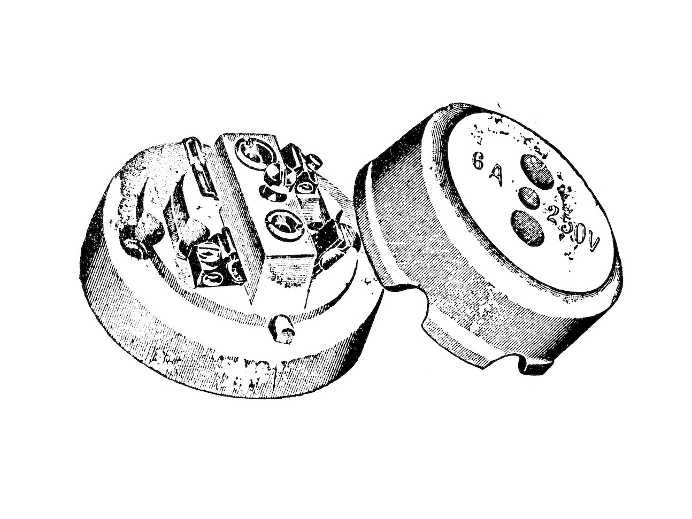
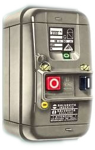

The evolution of safety in electrical items
One of the things that becomes very apparent once you start learning about vintage electrical devices
is just how unsafe they were. It was so easy to come into contact with live parts accidentally, and
back then they didn't have things like RCDs (aka GFCIs) to save you.
Because of this, I thought it would be interesting to take a look at various electrical items throughout
the years and analyse their safety, or lack thereof.
Italy in particular seems to have started caring about safety later than other European countries did - for example, the use of fuses or breakers wasn't even mandatory until the 60s! Of course, nobody in their right mind would even think about going without them, but this shows that, presumably, back then they didn't have strict electrical codes. Safety improved considerably only in the 80s/90s, and before then I presume that it was just up to the installer whether to buy products that had certain safety features or to go with a cheaper option.
The old times
Let's start by taking a look at some devices used in the 30s and 40s (the pictures were found in an old book I have).
  {kind=link}
{kind=link}
{kind=link}
The power sockets remained the same for many years, with safety features only being added in the 70s, so
the only distinctive feature older ones have is their material, which was generally ceramic or bakelite.
It's interesting to note that the socket in the last image has actually a place for a fuse - from my understanding,
this was sometimes done to save money on copper during the early days of electrification, so you could have a
bigger circuit for the entire house and have each device protected with its own fuse.


The fuse holders used at the time, on the other hand, were considerably less safe than the ones used in later years.
The one in the first picture had a porcelain or bakelite lid that unscrewed to reveal the fuse wire, which could only be changed when the power was off. Of course, there was nothing preventing the user from trying to change the fuse with the power still on, which could have lead to a shock.
Other models, like the ones in the second and third pictures, held the fuse wire in a removable lid, so
the fuses could have been, theoretically, removed and changed even with the power still on.
However, some models were better than others in that regard - the device in the third picture left a lot
of metal exposed, and it could have been easy to accidentally come in contact with it when changing the fuse.
Finally, there were also some fuses that screwed into place, an option which became more common later on.
Fuse panels
However, all of these items had the same flaw: it was very easy to come into contact with the live contacts. Many fuse holders, like the one in picture 4, had the connection screws exposed, which mean that you had to pay attention not to touch them accidentally when changing a fuse.
In the 50s the company BTicino started selling a line of fuse holders that was very popular which had
some considerable safety improvements over the ones showed above: each fuse holder had its own shut-off
switch, to cut the power before changing a fuse.
The fuses used were of the cartridge type (although there was also a version available which used rewireable
fuses), which is generally easier to change than a fuse wire.
And, most importantly, all the connections were housed inside of the plstic or metal case of the
fuse holder itself, which made accidental contacts much less likely.


These devices weren't without their own flaws, however: while they were much safer, there was nothing preventing you from turning on the power switch while a fuse wasn't inserted. Later models were available with a lid which covered the fuses unless the power was switched off, however this wasn't commonly found in the home, instead seeing more use in industrial applications.
Plus, another safety issue found with most kinds of fuses was the possibility of changing the fuse with another one of a different rating. In North American fuse panels you sometimes saw people using pennies to replace a blown fuse, and, well, there was certainly an equivalent of that over here as well.
This problem didn't necessarily have to exist, as it's quite easy to design cartridge fuses so that
the holder only accepts fuses of the right rating - this was the case with the Diazed fuse system used
extensively in the rest of continental Europe, but those were considerably less popular over here.
Ultimately, this would only be solved by the use of breakers instead of fuses, but that only happened
years later.
Plugs and sockets
Plugs and sockets took a while to improve, safety-wise. Of course, the materials and the design of them
changed over time, but for many years there weren't substantial safety benefits between a plug from, say,
the 30s, and one from the 60s, apart from maybe a slightly easier to hold design.
And, given that, compared to fuses, plugs are something that people actually use and handle every day, I wouldn't
be surprised if that was one of the easiest ways to get a shock back then.
This lead to a dissatisfaction with the current standard of plugs, which was apparently one of the
inspiring factors behind the creation of the Magic plugs and sockets.
{kind=link}
{kind=link}
They were primarily designed to be safe, and this part of their design is still perfectly valid even today
(although they aren't in use anymore).
The most significant safety feature they added was the introduction of shutters in sockets. A complicated
mechanism meant that the only thing that could open the (single) shutter was the plug itself.
The plug itself, on the other hand, was made so that it was impossible to touch any exposed metal if it
wasn't inserted fully.
These safety features were the main selling point of the Magic plugs - however, in the following years the
normal Italian plugs also started changing to be safer, by adopting shutters (with the Vimar Sicury patent
from 1975) and adding protective sleeves on the pins.
So, the Magic plugs had lost most of their advantages.
Residual Current Devices
Aka: GFCIs, RCCBs

One of the biggest contribution in safety has, of course, been the introduction and adoption of the RCD.
They have been mandatory in Italy for decades, and for a very good reason: they actually help save lives.
A very early model of RCD sold here was the BTicino Salvavita (="life saver").
This name has become so common that it has actually become the term used in Italy to refer to RCDs.
Early Salvavitas were both breakers and RCDs, however later on "plain" RCDs were also available, which can
be connected to multiple breakers for multiple circuits, helping reduce the cost of the installation while
keeping it secure.
Modern RCDs are current-operated: that is, if they sense a difference in current of a certain level (typically 30mA) between line and neutral, they trip and shut off the power. However, there was a precursor to the RCD that was voltage operated: the VOELCB (Voltage Operated Earth Leakage Circuit Breaker).
VOELCBs weren't all that common in Italy, but they were often used in the UK to protect installations using
a TT earthing system. With a TT system if there's a fault between the line and earth, the fuse or breaker
might not trip, depending on the type of fault, which is obviously a dangerous situation. A VOELCB would
instead sense the fault and kill the power to protect the user.
However, VOELCBs were just made to protect against that kind of fault - they didn't protect the user like RCDs
do. Because of this, they aren't generally found in homes nowadays.
Safety nowadays
Modern Italian electrics are generally about as safe as other EU countries - and, in some cases, even safer: RCDs are mandatory both in new and old installations, and all new sockets have shutters on them, which isn't the case in some other places even within Europe.
However, older installations are still present, and even though they should all have RCDs now, that doesn't solve all the other problems they might have: old sockets without shutters, undersized cabling, lack of earth protection... But thankfully installations like that are getting fewer and fewer as new ones are built and older houses are renovated.